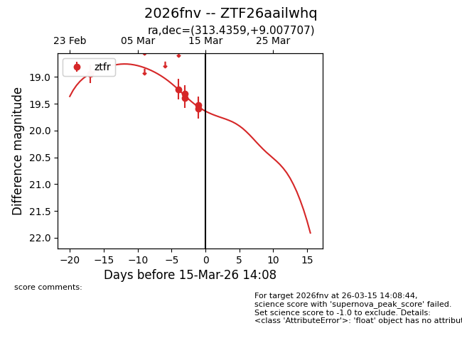
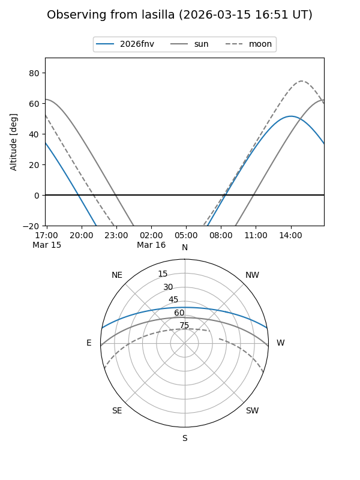
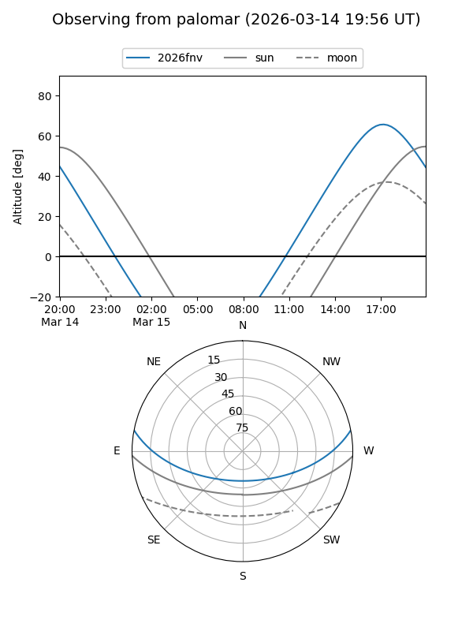
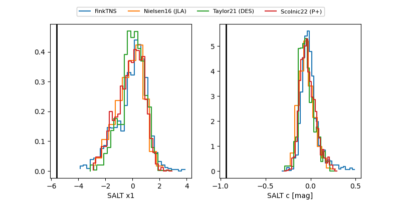

2026fnv
Target 2026fnv at 2026-03-15 14:10
Aliases and brokers:
FINK: link
Lasair: link
ALeRCE: link
TNS: link
YSE: link
alt names
ZTF26aailwhq (ztf,fink_ztf)
2026fnv (tns,yse)
Coordinates:
equatorial (ra, dec) = 313.4359,+9.00771
equatorial (HMS+DMS) = 20:53:44.63,+09:00:27.75
galactic (l, b) = (56.3582,-22.07072)
Flags:
Photometry:
last ztfr=19.60
6 ztfr detections
Lightcurve

Visibility


Additional plots
